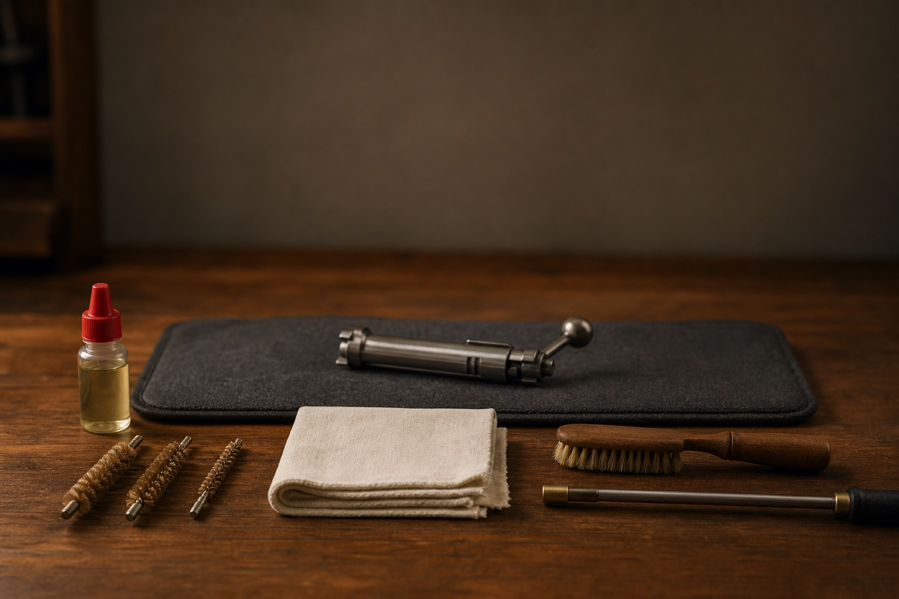

Benutzerhilfe
Kurzanleitung zu den wichtigsten Bereichen von Schiesskompass – von den ersten
Schritten bis zur Auswertung.
Erste Schritte
Starte mit den wichtigsten Stammdaten, damit die Erfassung am Schiessstand schnell bleibt.
Erfasse zuerst Disziplinen, Kaliber, Waffen, Munition und Scheiben. Danach kannst du Schiessprogramme, Passen und Munitionseinkäufe ergänzen. So zeigt Schiesskompass passende Auswahllisten an und wertet später Resultate, Verbrauch und Wartung aus.
- Disziplin erfassen
- Kaliber und Waffen erfassen
- Munition und Scheiben ergänzen
Disziplinen
Eine Disziplin beschreibt Ort und Rahmenbedingungen des Schiessens.
Beispiele sind Pistole 25 m, Gewehr 300 m oder Shooting Range bis 17 m. Die Disziplin hilft der App, passende Waffen, Scheiben und Programme vorzuschlagen.
- Name, Waffenart und Distanz erfassen
- Waffen der Disziplin zuordnen
Waffen
Waffen werden mit Kaliber, Status, Bild und Wartungsinformationen gepflegt.
Eine Waffe kann mehreren Disziplinen zugeordnet werden. Inaktive Waffen bleiben historisch erhalten, erscheinen aber nicht mehr in den normalen Auswahllisten.
- Kaliber auswählen
- Waffe aktiv halten oder mit Bemerkung inaktiv setzen
- Disziplinen zuordnen
Munition
Munition und Munitionseinkäufe sind die Grundlage für Verbrauch und Kosten pro Schuss.
Ein Munitionseinkauf beschreibt eine konkrete Beschaffung oder Event-Menge. Der Bestand ist als Näherung gedacht und muss nicht auf die Patrone genau stimmen.
- Munition zum Kaliber erfassen
- Einkauf mit Menge und Preis erfassen
- Aufgebrauchte Beschaffungen als verbraucht markieren
Schiessprogramme
Schiessprogramm ist der neutrale Oberbegriff; ein wertbares Programm wird meist Stich genannt.
Ein Stich kann aus mehreren Passen bestehen. Bundesübungen wie das Obligatorische Programm und das Eidgenössische Feldschiessen werden bewusst nicht als Stich bezeichnet. Der Feldstich ist ein feldschiessen-naher Wettkampfstich, aber keine Bundesübung.
- Schiessprogramm erfassen
- Passen in der richtigen Reihenfolge zuordnen
- Offizielle Vorgaben bei Bedarf kopieren
Schiessen erfassen
Beim Erfassen wählst du Art des Schiessprogramms, Disziplin, Waffe, Programm oder freies Training und Munition.
Am Stand kannst du Resultate direkt erfassen oder ein Foto für die spätere Nachbearbeitung aufnehmen. Bei Wettkämpfen ist das Foto des Standblattes oft die schnellste Variante.
- Art des Schiessprogramms wählen
- Schiessparameter prüfen
- Resultat direkt erfassen oder Foto speichern
Nachbearbeitung
Die Nachbearbeitung sammelt offene Fotos und unvollständige Resultate.
Nach dem Schiessen können Standblätter, Schussbilder und fehlende Details ergänzt werden. Korrekturen bleiben möglich, um Erfassungsfehler zu bereinigen.
- Offene Nachbearbeitungen prüfen
- Resultate pro Serie vervollständigen
- Eintrag abschliessen
Wartung
Die Wartung dokumentiert Reinigung, Service und Bemerkungen zu Waffen.
Zusammen mit den Schusszahlen kann Schiesskompass später Hinweise auf fällige Reinigung oder Service geben.
- Waffe auswählen
- Wartungsart und Datum erfassen
- Bemerkungen dokumentieren

Journal & Auswertung
Das Journal zeigt deine erfassten Schiessen und ist die Grundlage für die Fortschrittsauswertung.
Auswertungen machen Trefferquote, Mantis-Entwicklung, Programme, Waffen und Zeiträume vergleichbar. Die Genauigkeit ergibt sich aus den erreichten Punkten im Vergleich zur maximal möglichen Punktzahl.
- Journal regelmässig prüfen
- Fehler nachbearbeiten
- Auswertungen nach Zeitraum vergleichen
Export & Backup
Export ist keine vollständige Sicherung; das Backup ist für die Wiederherstellung gedacht.
Der CSV-Export dient zur externen Darstellung oder Weiterverarbeitung. Ein Backup sichert dagegen alle App-Daten und Medien für eine spätere Wiederherstellung (Format .sjbackup).
- CSV nur für Auswertungen ausserhalb der App verwenden
- Für die Datensicherung das Backup nutzen
- Backup-Dateien sorgfältig aufbewahren